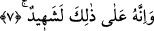
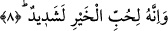

“Kenûd” denir. Sanki bu kelime, az hayırlı anlamına gelen “nekid” kelimesinin ters
çevrilmiş hâlidir.
Kaşânî bu âyet-i kerimeyi şöyle tefsir eder: İnsanoğlu, nîmetlere dalıp Rabbini
unuttuğu, onlara takılıp kaldığı ve onları Rabbine vâsıl olmak için gereken yerlerde
kullanmadığı için çok nankördür.
et-Te’vîlâtü’n-Necmiyye’de bu âyet şöyle tefsir edilir: İnsan “varlık”, “sıfatlar” ve
“esmâ” nîmetlerine karşı çok nankördür. Çünkü onların sâdece kendisine âid olduğunu
iddiâ etmektedir. Veya insan, nîmetleri uygun yerde kullanmadığı için âsîdir. Ya da insan
bu nîmetleri sırf kendine ayırdığı, irşad yoluyla halkı kendine tercih etmediği için
cimridir.
7. Şüphesiz buna kendisi de şâhiddir
“Şüphesiz kendisi de bu” nankörlüğüne “şâhiddir.” İnsan kendi nefsinin
nönkörlüğüne bizzat kendisi şâhiddir. Çünkü nankörlüğün eseri kendi üzerinde ortaya
çıkmış ayan beyân görülmektedir. Buradaki “şehâdet” lisân-ı hâl iledir, yoksa dil ile
söyleyerek değildir. Âyetteki “şâhiddir” ifâdesini, “insan bile bile nankörlük
etmektedir” diye anlamak da mümkündür. Kötü bir ameli, kötülüğünü bile bile işlemek
ise son derece mezmum bir şeydir.
8. Ve o, mal sevgisine de aşırı derecede düşkündür.
Bu âyet-i kerimede geçen “el-Hayr” kelimesi “mal” mânâsınadır, tıpkı Bakara
sûresinin 180. âyetinde yer alan “in terake hayran/Eğer bir mal bırakacaksa”
ifâdesinde olduğu gibi. “Dünyayı tercih etmek ve taleb etmek” demektir.
el-Es’iletü’l-Mukhame isimli eserde şöyle denir: “Allah Teâlâ bu âyet-i kerimede
“mal” cinsini “hayır” olarak isimlendiriyor. Ya o mal pis ve haram ise?” diye soracak
olursa şöyle cevap veririz: “Burada mala “hayır” denmesi o zamanki örf ve âdete
göredir. Çünkü Araplar malı “hayır” sayıyorlar. Allah Teâlâ da onların âdetleri üzere
mala “hayır” dedi. Aynı şekilde Cenâb-ı Hak “cihâd”ı da “sû’/kötülük” diye
isimlendirmiştir: “Bunun üzerine kendilerine hiçbir fenalık konmadan, Allah’ın
nîmetleri ve keremiyle geri geldiler.” (Ali İmran, 3/174) ayetinde “düşmanla
çarşıpma”ya “fenalık, kötülük, denmektedir. Hâlbuki “kıtâl” fenalık değildir, ancak
Allah Teâlâ burada cihâddan onların âdetine uygun olarak bahsetmiştir.